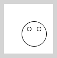
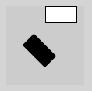
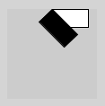
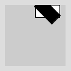
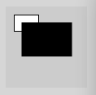
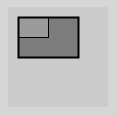
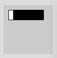
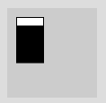
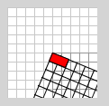
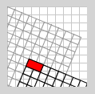

In Processing verwendest hauptsächlich drei sogenannte affine Transformationen:
- Translation (Verschiebung)
- Rotation (Drehung)
- Skalierung (Vergrößerung/Verkleinerung)
Diese Transformationen heißen affin (= verwandt, übereinstimmend), weil sie die prinzipielle Form eines Objekts nicht verändern.
Dank eines Tricks, den homogenen Koordinaten, lässt sich jede dieser Transformationen als eine Matrix ausdrücken. Und noch besser: Wenn man zwei Transformationen A und B hintereinander ausführen möchte, muss man lediglich die zugehörigen Matrizen MA und MB miteinander multiplizieren. Die resultierende Matrix repräsentiert dann die Kombination dieser zwei Transformationen. Das bedeutet, dass selbst tausende von Transformationen nach Multiplikation sich auf eine einzige Matrix verdichten.
Translation
Mit einer Translation verschiebt man das aktuelle Koordinatensystem um einen Vektor: translate(x, y); Das bedeutet, dass alle nachfolgenden Befehle sich auf dieses neue, verschobene Koordinatensystem beziehen, d.h. man kann komplexe Zeichnungen leicht verschieben, indem man die Befehle gemeinsam der Translation nachstellt. Wie hier das Gesicht, das der Maus folgt:
void draw() {
background(255);
translate(mouseX, mouseY);
// Gesicht
ellipse(0,0,50,50);
ellipse(-10,-10,8,8);
ellipse(10,-10,8,8);
}
Natürlich kannst du translate() auch zur Animation verwenden:
int x = 0;
void draw() {
background(255);
translate(x, height/2);
// Gesicht
ellipse(0,0,50,50);
ellipse(-10,-10,8,8);
ellipse(10,-10,8,8);
x++;
if (x > width) {
x = 0;
}
}Rotation
Rotation bedeutet, dass das gesamte Koordinatensystem um den Ursprung gedreht wird. Der Winkel wird im Bogenmaß angegeben, d.h. der Wert sollte zwischen 0 und 2*PI liegen: rotate(angle);
Wem das Bogenmaß nicht geheuer ist, der kann mit Grad rechnen (also 0° bis 360°) und die Funktion radians() benutzen, um von Grad zu Bogenmaß (engl. radian) umzurechnen.
// Rechteck ohne Rotation
rect(width/2, 0, 40, 20);
// Rotation um 45°
rotate(radians(45));
// Rechteck mit Rotation (schwarz)
fill(0);
rect(width/2, 0, 40, 20);Hier sieht man deutlich, dass nicht etwa um eine Ecke des Objekts gedreht wird, sondern eben um den Ursprung (oben-links) des Koordinatensystems.

Wie dreht man dann z.B. um die linke obere Ecke des Rechtecks? Dazu verschiebt man das Koordinatensystem zunächst zum gewünschten Rotationspunkt und dreht erst dann:
// Rechteck ohne Rotation (weiß)
rect(width/2, 0, 40, 20);
// Translation zum linken, oberen Rechteckpunkt
translate(width/2, 0);
// Rotation um 45°
rotate(radians(45));
// Rechteck mit Rotation (schwarz)
// Jetzt bei (0, 0), da Koord.system verschoben
fill(0);
rect(0, 0, 40, 20);
Jetzt hat man die gewünschte Rotation:

Du willst um den Mittelpunkt rotieren? Dann bewege das Koordinatensystem in die Mitte des Rechtecks:
// Rechteck ohne Rotation (weiß)
rect(width/2, 0, 40, 20);
// Translation zur Mitte des Rechtecks
translate(width/2 + 20, 10);
// Rotation um 45°
rotate(radians(45));
// Rechteck mit Rotation (schwarz)
// Jetzt mit (0, 0) als Mitte
fill(0);
rect(-20, -10, 40, 20);
Auch Rotation kann man gut zur Animation verwenden:
float angle = 0;
void draw() {
background(0);
translate(50, 50); // geh zur Mitte
rotate(angle); // drehe
rect(0, -3, 50, 6); // zeichne Zeiger
angle += radians(5); // in 5° Schritten
}Skalierung
Skalierung wird auch vom Ursprung des Koordinatensystems aus gerechnet. Der Skalierungsfaktor liegt zwischen 0 und 1 (verkleinern) oder über 1 (vergrößern): scale(factor);
Da die Skalierung vom Ursprung ausgeht, verschiebt sich das Objekt auch, wenn es nicht direkt auf dem Ursprung liegt:
rect(10, 10, 30, 20); // vorher
scale(2); // alles verdoppeln
fill(0); // schwarz
rect(10, 10, 30, 20); // nachherHier wird z.B. auch der Abstand der linken, oberen Ecke zum Ursprung verdoppelt:

Auch hier wieder der Trick mit dem vorherigen Verschieben. Die Endposition ist jetzt durch ein halbtransparentes Rechteck dargestellt.
rect(10, 10, 30, 20); // vorher
translate(10, 10);
scale(2); // alles verdoppeln
fill(0, 100); // schwarz, transparent
rect(0, 0, 30, 20); // nachher (jetzt auf 0, 0)Jetzt wird das Rechteck vom linken, oberen Punkt aus skaliert, was intuitiver ist. Beachte, dass auch der Rand (stroke) sich verdoppelt hat.

Auch hier ein Beispiel für eine Animation:
float factor = 1;
void draw() {
background(0);
rectMode(CENTER);
translate(50, 50); // geh zur Mitte
scale(factor);
rect(0, 0, 10, 10);
factor += .1;
if (factor > 12) {
factor = 1;
}
}Skalierung in zwei Dimensionen
Du kannst die Skalierung für die x- und y-Dimension getrennt angeben. Dann bekommt scale() zwei Parameter, jeweils für x- und y-Achse.
Hier wird nur in x-Richtung um Faktor 2 skaliert:
rect(10, 10, 30, 20);
scale(2, 1); // nur x verdoppeln
fill(0);
rect(10, 10, 30, 20);
Hier wird nur in y-Richtung um Faktor 2 skaliert:
rect(10, 10, 30, 20);
scale(1, 2); // nur y verdoppeln
fill(0);
rect(10, 10, 30, 20);
Koordinatensystem sichtbar gemacht
Der Befehl translate() verschiebt das aktuelle Koordinatensystem, nicht die Objekte. Das ist etwas ungewohnt, da du bisher gewohnt bist, Objekte zu verschieben. Es ist aber wichtig, dies so zu denken, damit die Reihenfolge deiner Operationen stimmt.
Folgendes Programm zeichnet das "aktuelle" Koordinatensystem aus Grid, um das Verständnis zu erleichtern:
void draw() {
background(255);
drawGrid(200); // normales Koord.sys.
translate(50,50);
drawGrid(150); // um (50,50) verschoben
rotate(PI/8);
drawGrid(0); // um 22,5° gedreht
fill(255,0,0);
rect(0,0,20,10); // Rechteck im Koord.sys
}
// Zeichnet das Koordinatensystem als Grid
void drawGrid(int greyscale) {
stroke(greyscale);
for (int x = 0; x < width; x += 10) {
line(x, 0, x, height);
}
for (int y = 0; y < height; y += 10) {
line(0, y, width, y);
}
}Man sieht, dass das rote Rechteck als Teil des verschobenen Koordinatensystems gezeichnet wird.

Verändert man die Reihenfolge der Operationen, ergibt sich ein ganz anderes Bild:
void draw() {
background(255);
drawGrid(200);
rotate(PI/8);
drawGrid(150); // um 22,5° gedreht
translate(50, 50);
drawGrid(0); // um (50,50) verschoben
fill(255, 0, 0);
rect(0, 0, 20, 10);
}
Zusammenfassung
Es gibt 3 Arten der Transformation:
- Translation (Verschieben):
translate(x, y);→ Verschiebt in die Richtung des Vektors
- Rotation (Drehen):
rotate(angle);→ Dreht um den Ursprung des (jeweiligen) Koordinatensystems
- Skalierung (Vergrößern/-kleinern):
scale(factor);→ Skaliert um den Faktor (0-1 bzw. >1)